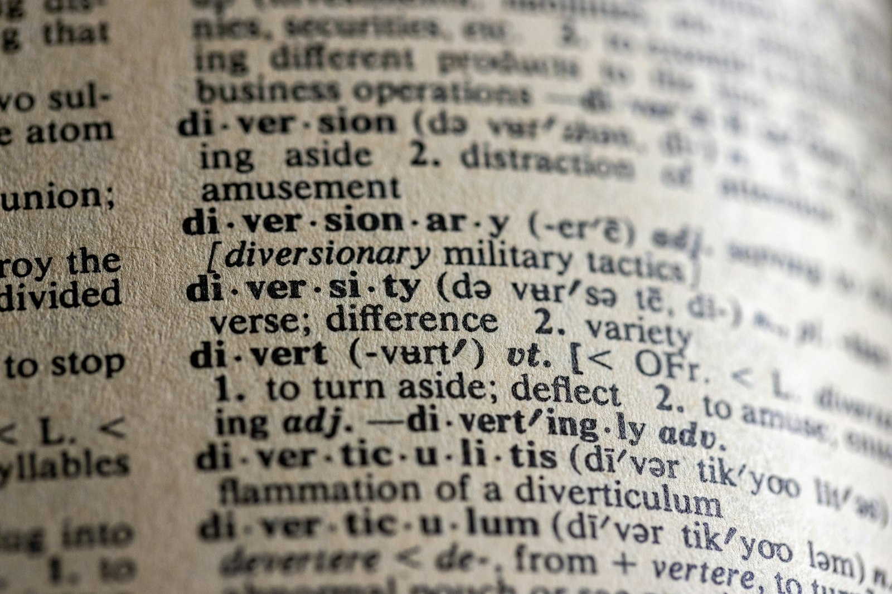
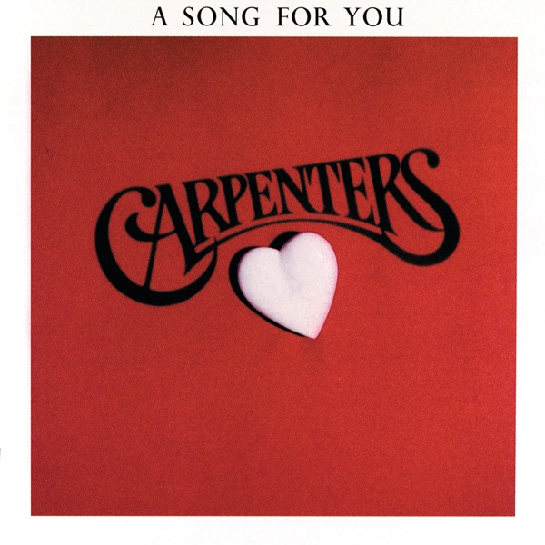
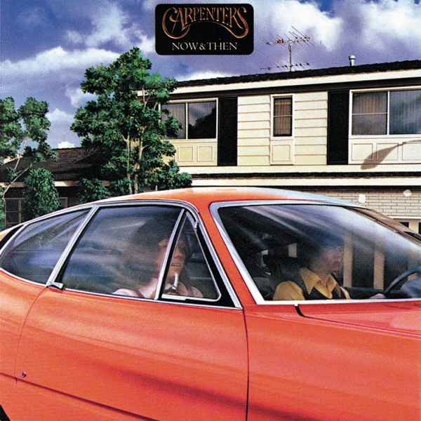
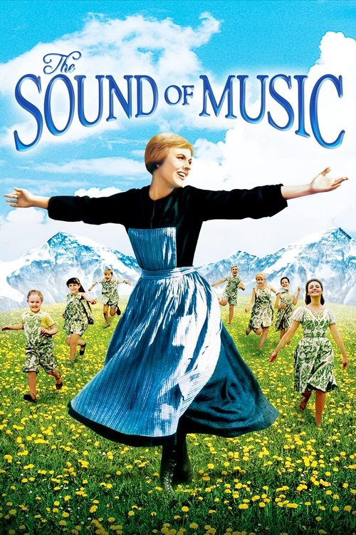
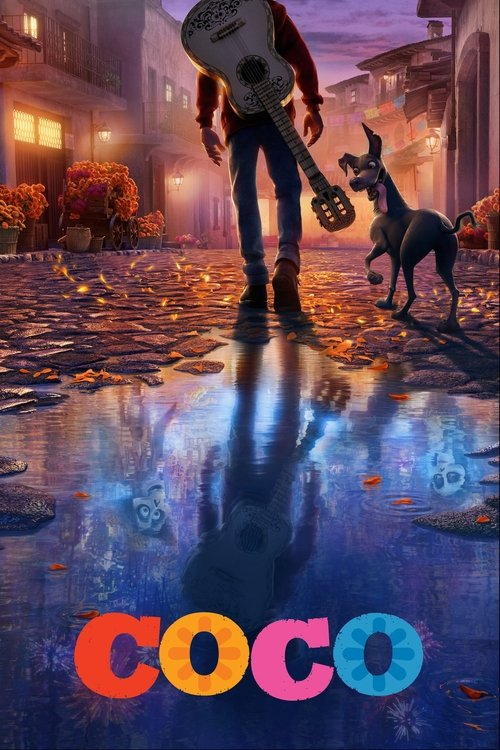
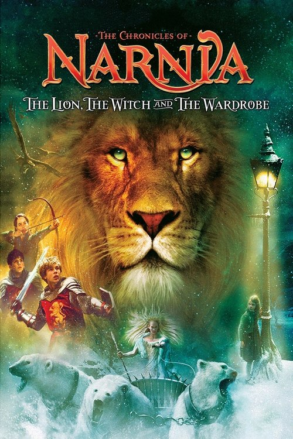
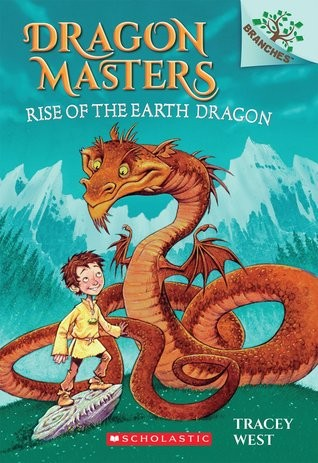

국내파로 배운 영어를
15년 동안 현장에서 확인했습니다

영어를 가르치는 게 꿈이었습니다. 한국에서 단어를 외우고 문장을 뜯어보며 영어를 익혔고, 그 방식이 틀리지 않았다는 걸 번역 현장과 미국 실리콘밸리 회사에서 매일 확인했습니다.
단어는 문장 속에서, 문장은 글의 흐름 속에서 만나야 내 것이 됩니다. 직결영어의 수업은 그 확신 위에 있습니다.
- 수능
- 언어·외국어 영역 만점
- 학력
- 강원대학교 영어교육과 인문대 수석 입학, 학과 수석 조기 졸업
- 자격
- 중등학교 정교사(영어) 2급
- 영어
- 읽기·듣기·쓰기 CEFR C1은 어느 정도인가요?CEFR은 유럽에서 만든 외국어 능력 기준입니다. A1부터 C2까지 여섯 단계가 있고, C1은 위에서 두 번째입니다. 길고 까다로운 글을 숨은 뜻까지 이해하고, 학업과 업무에서 영어를 막힘없이 쓰는 수준입니다. 인증
- 지도
- 고등 전문 과외 4년 (수능, 외고 입시, 영어 특기자 전형)
- 번역
- 글로벌 OTT 플랫폼 영한 자막 15년 이상
- 실무
- 미국 실리콘밸리 현지화 전문 기업 7년 이상
공부한 시간이 점수로도,
실력으로도 남도록
단어 시험에서는 맞혔는데 지문에서는 못 알아보는 영어, 수업에서 들었는데 시험지 앞에서는 떠오르지 않는 영어. 그 사이가 끊겨 있으면 공부한 시간이 남지 않습니다. 직결영어는 그 사이를 곧게 잇습니다.
단어와 문장
외운 단어는 그날 읽는 지문에서 다시 만나게 합니다. 한영 짝 맞추기 대신 문장 속에서 뜻을 확인하는 시험지로 점검합니다.
수업과 시험
시험 기간에는 학교 교과서와 시험 범위에 맞춰 내신을 준비하고, 그 밖의 기간에는 수능으로 가는 독해와 어법의 기초를 다집니다.
오늘과 미래
탄탄한 기본기를 만듭니다. 언제 어디서도 무기처럼 꺼내 쓰는 영어가 됩니다.
수업은 이렇게 돌아갑니다
듣고 끝나는 수업은 없습니다. 매 시간 확인하고, 틀린 것은 다시 확인합니다.
단어 시험으로 시작합니다
종이에 직접 쓰고, 문장 속에서 알맞은 뜻을 고르는 문제로 확인합니다.
지문에서 다시 만납니다
그날 외운 단어가 들어간 지문을 읽습니다. 아는 단어가 문장 안에서 어떻게 쓰이는지 눈으로 확인합니다.
백지에 다시 써 봅니다
배운 문법은 빈 종이에 스스로 정리해 봅니다. 설명할 수 있어야 아는 것으로 봅니다.
틀린 것은 다시 시험 봅니다
틀린 단어와 문제는 다음 수업에서 다시 확인합니다. 통과할 때까지 기록이 남습니다.
기록은 학부모님께 공유합니다
시험 결과와 과제는 직결영어 학습 관리 앱에 쌓이고, 학부모님께 정기적으로 공유합니다.
이런 아이와 잘 맞습니다
잘 맞습니다
- 원서는 잘 읽는데 문법과 쓰기가 약한 아이
- 영어를 꾸준히 해 왔지만 지금 방향이 맞는지 확신이 없는 아이
- 영어유치원이나 어학원을 다녔고, 이제 중고등 영어가 걱정되는 아이
- 외워야 할 때는 외울 줄 알고, 그럴 마음이 있는 아이
- 설명을 듣고 이해한 뒤 넘어가는 걸 좋아하는 아이
한 번 더 생각해 보세요
- 시험 없이 원서만 읽고 싶은 경우
- 회화 위주의 수업을 찾는 경우
- 숙제와 복습 없이 수업만으로 실력이 오르길 기대하는 경우
- 짧은 기간에 점수만 빠르게 올리고 싶은 경우
학부모님이 먼저 묻는 것들
누가 가르치나요?
원장이 직접 가르칩니다. 수업은 소수 정원으로 합니다.
과제는 얼마나 되나요?
과제는 매 수업 뒤에 나가고, 다음 수업에서 확인합니다. 몰아서 하는 것보다 매일 조금씩이 기준입니다.
아이가 어떻게 하고 있는지 알 수 있나요?
시험 결과와 과제 수행은 직결영어 학습 관리 앱에 기록되고, 학부모님께 정기적으로 공유합니다.
학교 시험 기간에는 어떻게 하나요?
학교 교과서 본문과 어휘, 단원 문법을 정리하고 서술형과 수행평가를 준비합니다. 학교별 시험 범위에 맞춰 진도를 짭니다.
레벨테스트는 어떻게 보나요?
30분 동안 단어, 독해, 문법을 간단히 확인합니다. 비용은 2만 원이고, 수업에 등록하시면 수업료에서 차감합니다.
결석하면 보강을 하나요?
결석은 원칙적으로 보강하지 않습니다. 병결은 수업 시작 전까지 카카오톡으로 알려 주시면 월 1회에 한해 회차가 보존됩니다. 자세한 내용은 원내 규칙에 있습니다.
시간표와 교육비는 어떻게 되나요?
교육비와 시간표는 상담에서 안내합니다.
문제집 안에 없는 영어도
함께 다룹니다
교재를 한 권 끝낼 때마다 원서, 뉴스, 팝송 같은 실제 영어 콘텐츠를 함께 다룹니다. 이런 영어는 문제집 안에 없습니다. 그렇다고 기초를 건너뛰고 닿을 수 있는 곳도 아닙니다.
세계 뉴스
BBC, CNN, 뉴욕 타임스 같은 세계 언론의 최근 기사를 함께 읽습니다. 기사에서 단어 하나를 골라 뜻과 쓰임, 말의 뿌리까지 확인합니다. 읽은 내용을 두고 아이와 이야기도 나눕니다.
팝송
가사가 건전하고 아름다운 곡만 고릅니다. 함께 듣고 따라 부르면서 가사의 뜻을 담뿍 느껴 봅니다.



영화와 애니메이션
교육적이고 아름다운 영화와 애니메이션을 골라 봅니다. 같은 단어도 장면에 따라 뜻이 달라집니다. 표정과 목소리를 함께 보면 그 차이를 쉽게 이해할 수 있습니다.



숫자보다 먼저,
아이가 즐길 수 있는 책
초등 고학년과 중학생이 읽기 좋은 원서를 AR 지수별로 모았습니다. 수업에서는 아이 수준에 맞는 책을 함께 고르고 소리 내 읽습니다.

Dragon Masters
AR 3.1~4.2

Treehouse
AR 3.2~4.3

Holes
AR 4.6 · 뉴베리 1999

Harry Potter
AR 5.5~7.2

The Giver
AR 5.7 · 뉴베리 1994
Sapiens
교양서


상담은 상담 신청서로
시작합니다
아이의 지금 영어와 학습 이력을 먼저 듣고, 맞는 시작점을 함께 찾습니다.
수업에 등록하시면 수업료에서 차감합니다.